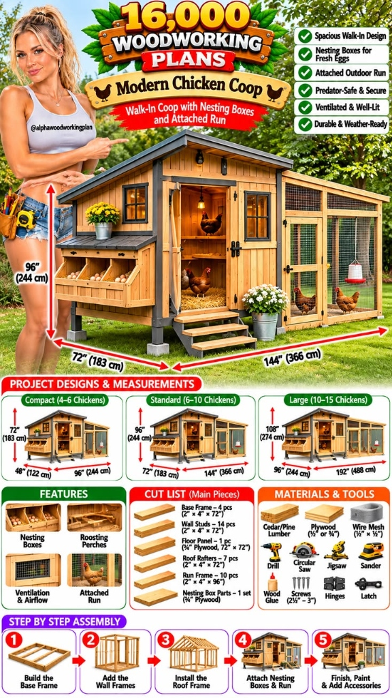

Modern Chicken Coop DIY: Build a Spacious Walk-In Chicken Coop with Nesting Boxes & Outdoor Run!
Dreaming of Having Fresh Eggs Every Morning? Build a Functional, Predator-Resistant Farmhouse Coop with Comfortable Roosting Perches and an Attached Run!

Dreaming of having fresh eggs every morning? 🐓 A modern walk-in chicken coop is one of the best backyard woodworking projects for anyone who loves raising chickens. With a spacious interior, built-in nesting boxes, comfortable roosting perches, and an attached outdoor run, this design combines functionality, convenience, and beautiful farmhouse style.
Whether you're a beginner woodworker or an experienced DIY enthusiast, this chicken coop can be a fantastic addition to your backyard! Unlike cramped low-slung coops that require crouching in dirt and bedding to collect eggs, a full walk-in structure gives you head height, easy cleanout access, and year-round protection for your flock.
1. Why Build a Modern Walk-In Chicken Coop?
A well-designed chicken coop makes caring for backyard chickens easier and more comfortable. Unlike small traditional coops, this walk-in design provides enough room for cleaning, collecting eggs, and maintaining the chicken area.
Key Features & Benefits:
- Spacious Walk-In Design: Full standing height makes cleaning and servicing effortless.
- Built-In Nesting Boxes: Easy-access individual egg compartments for fresh daily harvests.
- Comfortable Roosting Perches: Natural wooden perches placed above floor level for overnight roosting.
- Attached Outdoor Chicken Run: Sunlight, scratching space, and fresh air for active foraging.
- Optimized Soffit Ventilation: High airflow prevents moisture, humidity, and ammonia buildup.
- Durable Wooden Construction: Solid 2x4 framing designed to withstand harsh winter winds and rain.
- Predator-Resistant Wire Mesh: 1/2" galvanized hardware cloth protects against raccoons, foxes, and hawks.
🔥 Want to Build More Amazing Woodworking Projects?
Don't limit yourself to just one chicken coop! Discover thousands of woodworking ideas, detailed plans, and DIY projects to inspire your next build.
2. Chicken Coop Dimensions and Design Options
The featured standard design measures approximately:
- Width: 144 inches (12 feet / 366 cm)
- Depth: 72 inches (6 feet / 183 cm)
- Height: 96 inches (8 feet / 244 cm)
You can customize the structure depending on your backyard size and flock capacity. The blueprint provides three distinct variations to fit your needs:
*Remember to check recommended space requirements for your chicken breeds and local climate before finalizing your dimensions. As a rule of thumb, provide at least 3–4 sq ft of indoor coop floor space and 8–10 sq ft of outdoor run space per standard laying hen.
3. Materials and Tools Required
Before starting construction, prepare the necessary framing lumber, exterior sheathing, hardware cloth, and tools.
📐 Blueprint Cut List (Standard 12' × 6' Walk-In Coop):
🪵 Main Materials & Hardware:
- Cedar or pine lumber (naturally rot-resistant)
- 2×4 structural wooden framing
- Exterior-grade ¾" plywood for floors & nesting boxes
- 1/2" 19-gauge galvanized wire mesh (hardware cloth)
- Corrugated polycarbonate or asphalt roofing panels
- 2½" and 3" exterior-rated decking screws
- Heavy-duty hinges and padlockable barrel latches
- Exterior waterproof wood glue and non-toxic animal-safe paint
🛠️ Essential Tools:
- Cordless drill and driver bit set
- Circular saw or miter saw for clean cuts
- Jigsaw for curve & access notch work
- Random orbital sander (80 and 120-grit)
- Measuring tape & combination carpenter square
- Heavy-duty wire snips for hardware cloth
- Pneumatic stapler or screws with fender washers
- 4-foot spirit level for plumb foundation
Pro Builder Tip: Choose weather-resistant exterior materials and suitable predator-resistant 1/2" hardware cloth instead of flimsy chicken wire. Chicken wire only keeps chickens in—it will not stop raccoons, coyotes, or dogs from tearing through.
💡 Looking for More Detailed Woodworking Ideas?
From chicken coops to garden sheds, outdoor furniture, and workshop storage, explore a massive library of detailed DIY woodworking plans.
4. Step-by-Step Chicken Coop Construction
Follow the 5-step assembly sequence outlined in the blueprint to build a solid, weather-tight walk-in coop from the ground up:
Step 1: Build the Base Frame
Start by constructing a strong rectangular wooden base using four 2" × 4" × 72" pressure-treated boards. Lay out the perimeter on level ground using concrete deck blocks or crushed gravel runners to keep wood away from direct damp soil contact.
Check diagonal measurements from opposite corners to guarantee the base is perfectly square. Fasten the corners with 3" exterior decking screws. Secure the ¾" plywood floor panel (72" × 72") on top of the enclosed sleeping coop section.
Step 2: Add the Wall Frames
Build the side, front, and back wall frames using 14 pieces of 2" × 4" × 72" studs. Pre-assemble wall panels flat on your driveway or workshop floor for maximum precision, spacing studs at 16" or 24" on-center.
Frame out rough openings for the human walk-in door, chicken pop-door into the run, ventilation windows, and the side nesting box cutout. Raise the walls, brace them plumb with temporary diagonal battens, and screw the bottom plates securely into the base frame.
Step 3: Install the Roof Frame
Attach the seven 2" × 4" × 72" roof rafters across the top wall plates with birdsmouth notches or hurricane ties. Maintain a steady pitch (at least 3/12 or 4/12 slope) to ensure rain and snow shed cleanly away from the entrance doors.
Add suitable roofing materials, such as corrugated polycarbonate panels (which allow natural sunlight in) or metal roofing sheets over 7/16" OSB. Ensure generous 6" to 8" overhangs on all sides to protect siding and open wire mesh from driving rain.
Step 4: Attach Nesting Boxes and Outdoor Run
Build the three-compartment nesting box unit from ¾" plywood and mount it cantilevered to the side wall opening. Equip it with a top-hinged exterior access lid lined with flashing so you can collect clean eggs daily without stepping into the coop.
Install interior roosting perches rounded on top using 2x4 lumber (wide face up so chickens can sit flat on their feet in cold weather). Erect the 10-piece 2" × 4" × 96" outdoor run frame, and wrap all run walls and ceiling tightly with 1/2" galvanized hardware cloth fastened with heavy-duty exterior staples or washers.
Step 5: Finish, Paint, and Add Accessories
Sand rough lumber edges to prevent splinters. Apply two coats of exterior non-toxic, low-VOC paint or protective stain to safeguard the wood from rot, moisture, and sun damage.
Install predator-proof spring-loaded latches or dual-action barrel slide bolts on all human and access doors. Hang gravity-fed poultry feeders, automatic nipple waterers, and spread 3" to 4" of clean kiln-dried pine shavings across the coop floor.
🚀 Ready to Take Your Woodworking Skills Further?
Discover thousands of project ideas with complete plans that can help you turn your DIY inspiration into real woodworking projects.
5. Make Your Chicken Coop More Comfortable
Add proper ventilation, weather protection, easy-to-clean flooring, and secure doors. A comfortable flock is a healthy, high-producing flock!
💨 High Soffit Ventilation
Chickens produce significant moisture and ammonia. Install wire-screened vent slats near the roof peak so moisture escapes without blowing direct drafts across roosting birds.
🦊 Underground Predator Apron
Bury hardware cloth 12 inches outward around the perimeter of the run. This completely prevents digging predators like dogs, coyotes, and foxes from tunneling underneath.
🧹 Easy-Clean Linoleum Floor
Line the interior plywood floor with a single remnant piece of vinyl sheet or linoleum before adding pine shavings. Droppings peel right off during seasonal deep cleanouts.
🔒 Double-Action Latches
Raccoons possess dexterous paws that can slide open basic latches. Always use spring-loaded carabiner clips, padlock hasps, or dual-step safety latches.
Regularly inspect the wire mesh and latches to ensure predators cannot enter. A thoughtfully designed chicken coop can make backyard chicken keeping much easier while giving your garden a beautiful farmhouse appearance.
Frequently Asked Questions (FAQ)
How much does it cost to build this DIY walk-in chicken coop?
Building this walk-in coop costs roughly $350 to $800 depending on lumber prices, your choice of cedar vs. treated pine, and whether you repurpose existing scrap materials or buy new corrugated roofing. Pre-fabricated coops of this size typically retail for $1,800 to $3,500, offering major DIY savings.
How many nesting boxes do I need for my flock?
A good standard ratio is 1 nesting box for every 3 to 4 laying hens. In our standard 12' × 6' walk-in coop designed for 6 to 10 hens, a 3-compartment external nesting box unit provides plenty of space, as hens naturally take turns laying.
What is the best wood to use for building a backyard chicken coop?
Pressure-treated lumber should only be used for the ground-contact base runners. For wall studs, rafters, and interior walls, use kiln-dried untreated pine (SPF), spruce, or natural cedar. Never use treated wood inside the nesting box or on roosting bars where birds peck and sleep.
Why should I use hardware cloth instead of traditional chicken wire?
Traditional hexagonal chicken wire is only strong enough to keep birds contained; it easily tears when pulled by dogs, foxes, or raccoons, and small rodents can squeeze right through. Galvanized 1/2-inch 19-gauge welded hardware cloth forms an impenetrable barrier that keeps all predators out.
Can I winterize this coop in cold northern climates?
Yes! You can fit clear removable polycarbonate sheets or heavy-duty greenhouse plastic over the run wire to block winter winds while maintaining sunlight. Never block upper soffit roof vents in winter—ventilation is vital to prevent frostbite caused by trapped moisture.
Final Thoughts
Building a modern walk-in chicken coop is a rewarding DIY woodworking project. With its spacious design, nesting boxes, roosting perches, and attached outdoor run, it offers a practical solution for backyard chicken owners.
Start planning your dream chicken coop today and create a comfortable space for your feathered friends!
Your Next Woodworking Project Is Waiting!
Get instant access to detailed blueprints, cut lists, and step-by-step instructions for over 16,000 outdoor and indoor woodworking projects.
Disclosure: This article contains an affiliate link. If you make a purchase through this link, I may earn a commission at no additional cost to you.